נכנסים פנימה. יוצאים יחד.
מוכנים להציל.
תלבושת אחת, אחת־עשרה תנועות והרבה מים.
V.01
תצוגת דמותטוען ציוד…
תלבושת כבאי על הגוף האחיד
IDLE_READY
מוכנים להצלה
—מדד תנועה
אפקטים שקופים, באותה שפה
המים עושים את שלהם.
קשת מים · טיפות · נתז על חפץ · אדים
גיליון כל הפריימיםמפת הספרייטים

08 פריימים / מים06 פריימים / אדים